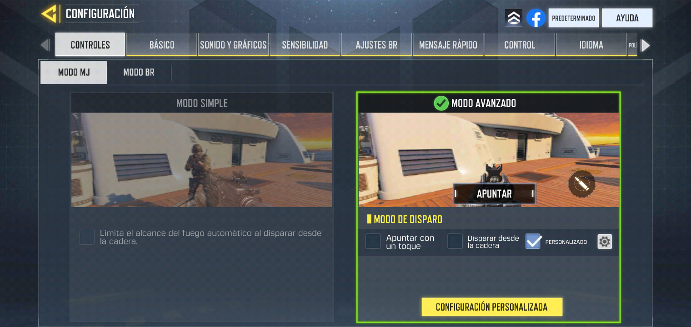
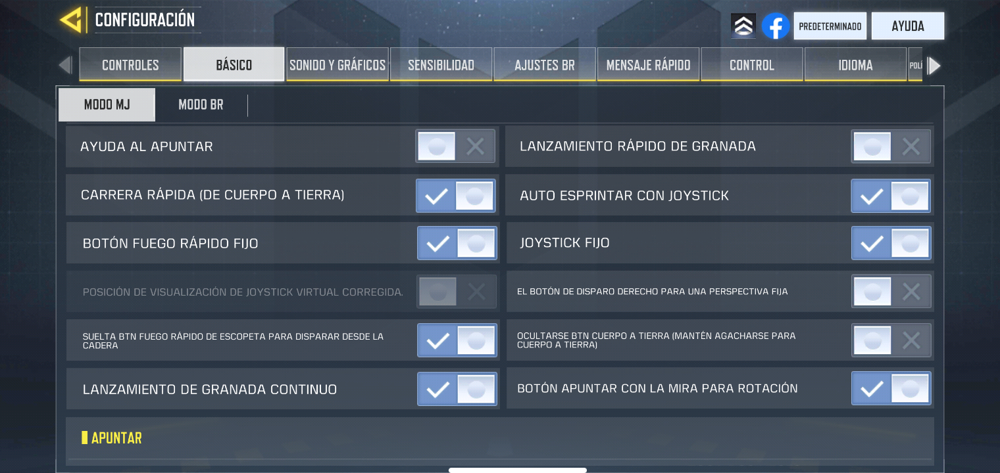
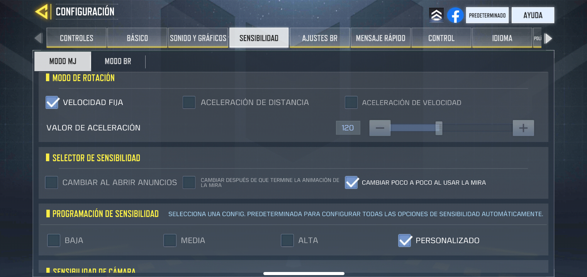
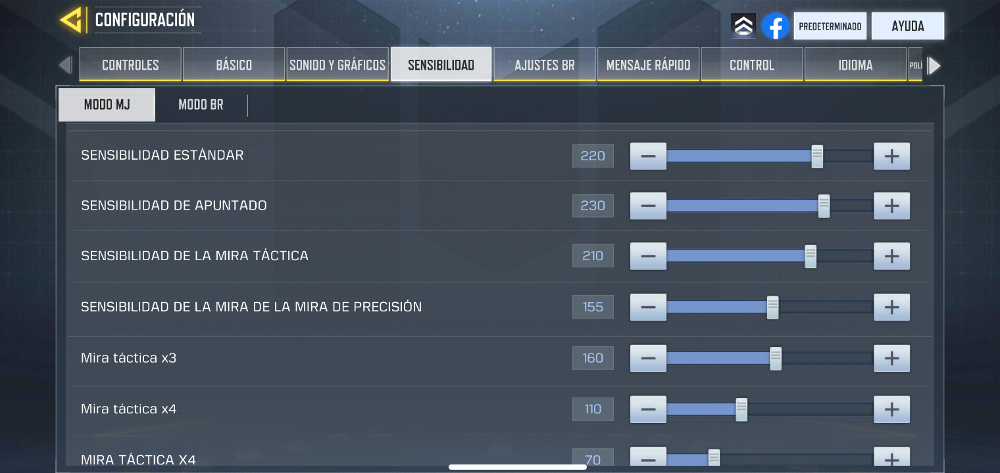
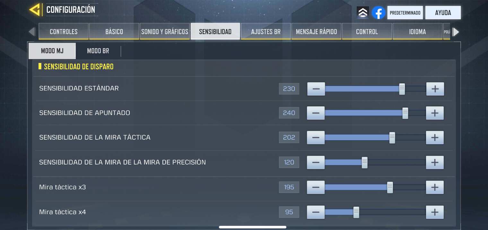
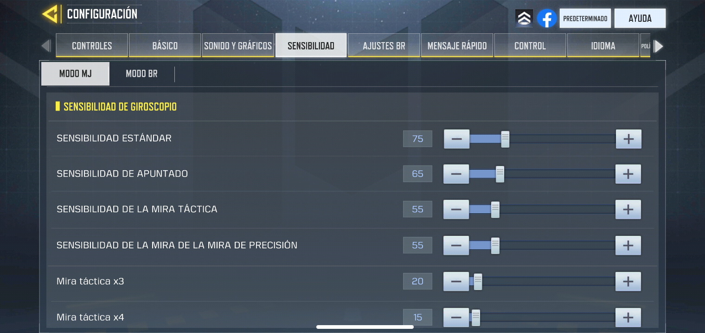
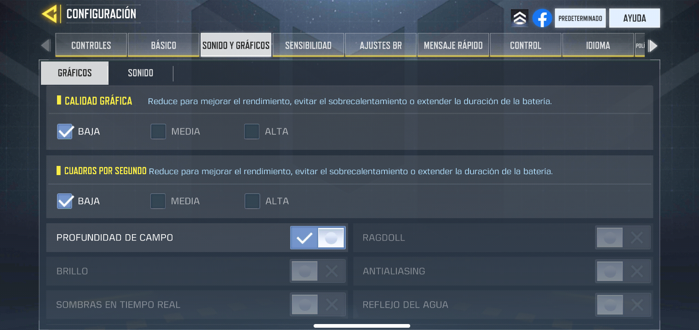

Sensibilidad
Este apartado es fundamental, encontraras la sensibilidad de la cámara, esto es a tu gusto y comodidad y con tu estilo de juego, puedes modificar la sensibilidad de tu cámara cuando el personaje esta corriendo, sensibilidad de la mira y muchas cosas más, se encuentra en el apartado de sensibilidad en configuración, en configuración también puedes subir o bajar los graficos del juego para un mejor rendimiento pero esto es dependiendo con tu dispositivo, puedes modificar los controles del juego, el lenguaje etc.
      